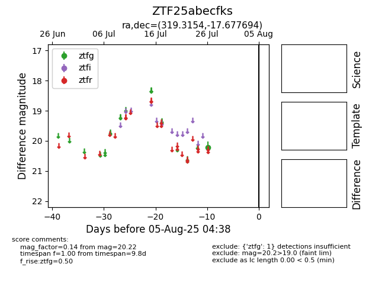

Target ZTF25abecfks at 2025-08-05 04:38, see:
FINK: fink-portal.org/ZTF25abecfks
Lasair: lasair-ztf.lsst.ac.uk/objects/ZTF25abecfks
ALeRCE: alerce.online/object/ZTF25abecfks
alt names
ZTF25abecfks (ztf,fink)
coordinates:
equatorial (ra, dec) = (319.3154,-17.67769)
galactic (l, b) = (32.0272,-39.96567)
photometry
last ztfg=20.22
1 ztfg detections
